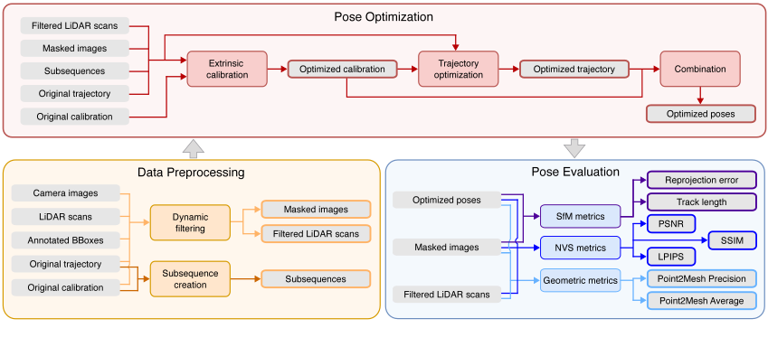
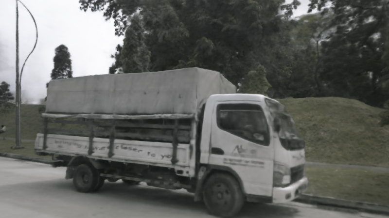
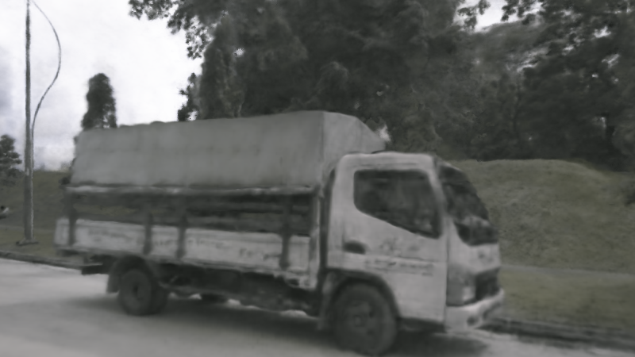
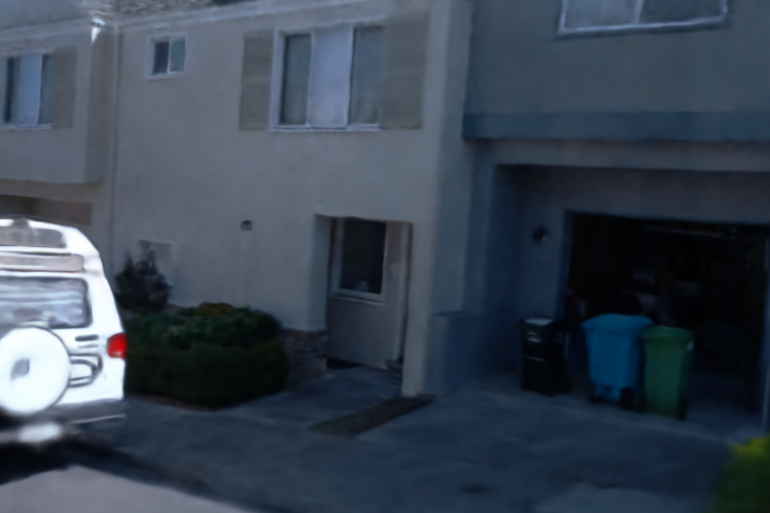
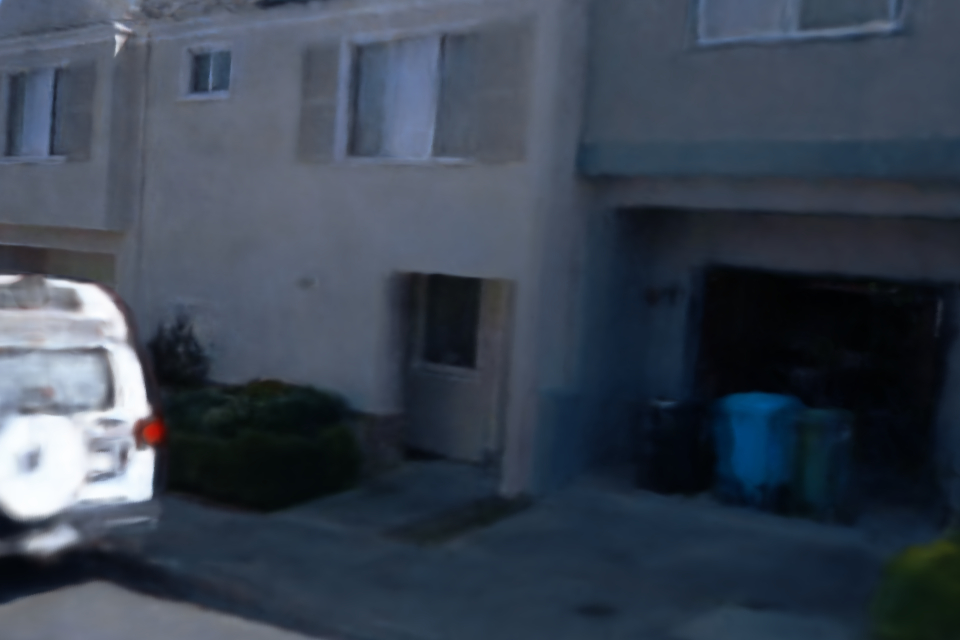
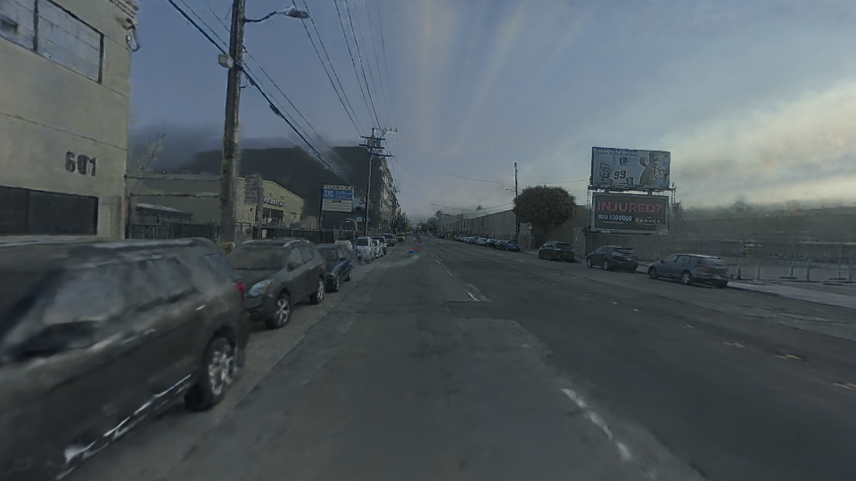
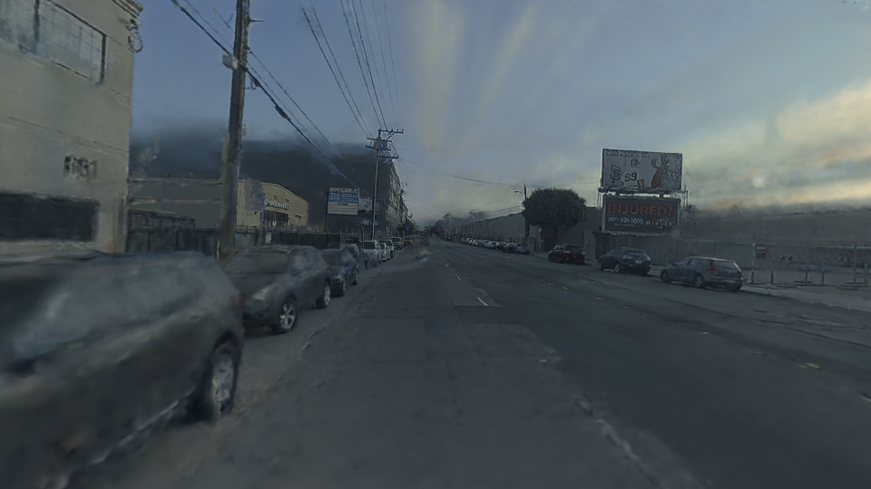
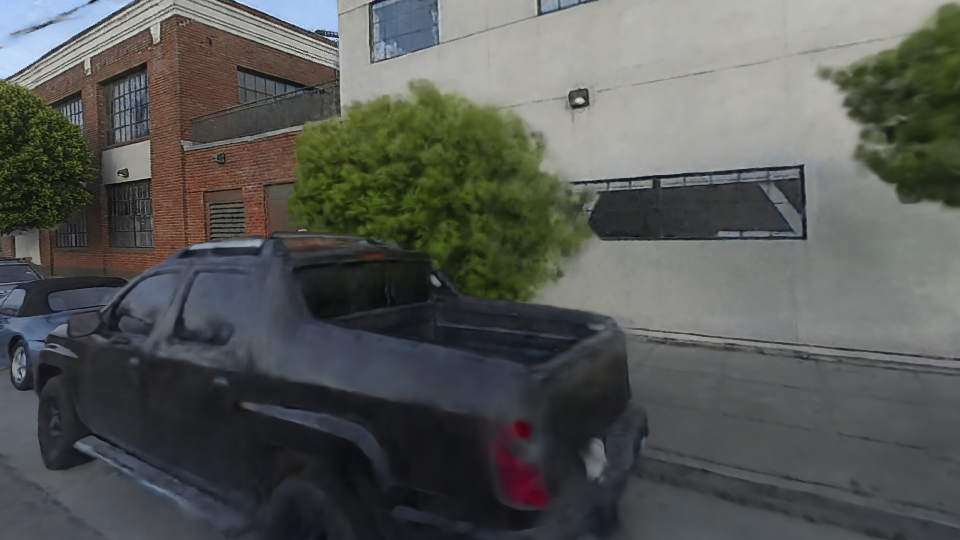
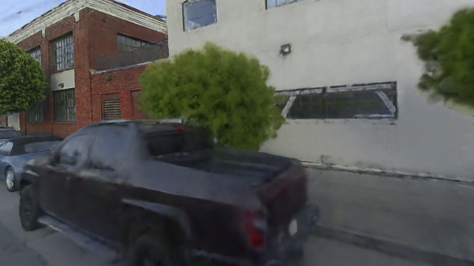

Refining Ground Truth Poses in Autonomous Driving Datasets via Neural Rendering
IEEE RA-L 2026


Refine sensor calibration and vehicle motion, and evaluate pose quality through rendering, structure-from-motion and geometric consistency.
Pose refinement and evaluation
AVoptim evaluates the consequences of sensor calibration and trajectory refinement on driving-scene reconstruction. MOISST++ extends scene-based calibration to ego motion. The benchmark reports calibration and trajectory refinement on four datasets, averaged over five sequences each.


Visual comparisons
Renderings from the original and refined poses, using the project’s comparison videos and images.
nuScenes


OriginalRefinedWaymo


OriginalRefinedPandaSet · street


OriginalRefinedPandaSet · road markings


OriginalRefinedLeaderboard
Calibration + trajectory refinement. Original and MOISST++ are compared across all ten pose-benchmark scores: rendering quality, structure from motion and geometric consistency.
| Dataset | Pose set | Nerfacto | Splatfacto | SfM | Geometry | ||||||
|---|---|---|---|---|---|---|---|---|---|---|---|
| PSNR dB ↑ | SSIM ↑ | LPIPS ↓ | PSNR dB ↑ | SSIM ↑ | LPIPS ↓ | Reprojection px ↓ | Track length ↑ | P2M precision % ↑ | Surface distance m ↓ | ||
| All datasetsMean over 20 sequences | OriginalDataset poses | 21.80 | 0.720 | 0.455 | 23.11 | 0.772 | 0.333 | 1.108 | 6.11 | 54.98 | 0.296 |
| All datasetsMean over 20 sequences | MOISST++Calibration + trajectory | 22.69 | 0.760 | 0.387 | 25.03 | 0.820 | 0.266 | 0.886 | 6.95 | 68.74 | 0.204 |
| KITTI-360Mean over 5 sequences | OriginalDataset poses | 21.30 | 0.718 | 0.278 | 23.87 | 0.793 | 0.178 | 0.575 | 6.80 | 77.00 | 0.100 |
| KITTI-360Mean over 5 sequences | MOISST++Calibration + trajectory | 21.41 | 0.726 | 0.272 | 23.91 | 0.794 | 0.177 | 0.580 | 6.82 | 78.10 | 0.085 |
| nuScenesMean over 5 sequences | OriginalDataset poses | 20.72 | 0.708 | 0.531 | 21.88 | 0.747 | 0.404 | 1.524 | 6.13 | 45.60 | 0.352 |
| nuScenesMean over 5 sequences | MOISST++Calibration + trajectory | 22.26 | 0.794 | 0.376 | 26.44 | 0.859 | 0.242 | 0.948 | 8.54 | 73.30 | 0.100 |
| PandaSetMean over 5 sequences | OriginalDataset poses | 21.91 | 0.699 | 0.520 | 23.54 | 0.774 | 0.318 | 1.164 | 5.53 | 50.50 | 0.311 |
| PandaSetMean over 5 sequences | MOISST++Calibration + trajectory | 22.67 | 0.738 | 0.453 | 24.73 | 0.818 | 0.278 | 0.949 | 5.96 | 54.00 | 0.272 |
| WaymoMean over 5 sequences | OriginalDataset poses | 23.28 | 0.756 | 0.493 | 23.13 | 0.775 | 0.432 | 1.168 | 5.98 | 46.70 | 0.420 |
| WaymoMean over 5 sequences | MOISST++Calibration + trajectory | 24.40 | 0.781 | 0.447 | 25.02 | 0.809 | 0.367 | 1.065 | 6.46 | 69.50 | 0.357 |
Download scores CSVDownload scores JSONScore definitions and aggregation
Evaluation protocol
Each dataset contributes five sequences. Dataset scores come from reference/current/*_pose.csv in the benchmark repository. Overall scores are the arithmetic mean of the unrounded twenty-sequence records for each pose set.
MOISST++ refines sensor extrinsics and ego trajectory; Original is generated locally from the downloaded dataset poses. Rendering evaluation uses Nerfacto with LiDAR depth supervision and Splatfacto with SfM + LiDAR initialization, with pose optimization disabled. PSNR, SSIM and LPIPS are part of the pose benchmark.
SfM triangulates with the supplied camera poses and intrinsics fixed. P2M precision uses a 0.15 m nearest-vertex threshold; surface distance uses triangle surfaces. These scores measure consistency rather than independent absolute pose ground truth.
Research code
neural-calibration prepares raw KITTI-360, nuScenes, PandaSet and Waymo data for independent MOISST, SOAC, 3DGS-Calib, MOISST++ and SOAC++ implementations, with training and sensor-pose export instructions. avoptim-benchmark prepares the twenty benchmark sequences and evaluates Original, provided MOISST++ or custom method poses across ten rendering, structure-from-motion and geometry metrics. Original poses and observation metadata are generated locally from authorized dataset downloads; the provided optimized bundle contains pose matrices only. Training and benchmark preparation use separate commands documented in the repositories.
The results shown here are reported paper results and recorded benchmark scores. See the repositories for implementation details and validation scope.
Citation
@article{herau2026refining,
title = {Refining Ground Truth Poses in Autonomous Driving Datasets via Neural Rendering},
author = {Herau, Quentin and Piasco, Nathan and Bennehar, Moussab and Roldao, Luis and Tsishkou, Dzmitry and Liu, Bingbing and Migniot, Cyrille and Vasseur, Pascal and Demonceaux, C\'edric},
journal = {IEEE Robotics and Automation Letters},
year = {2026},
doi = {10.1109/LRA.2026.3732898},
eprint = {2504.15776},
archivePrefix = {arXiv}
}